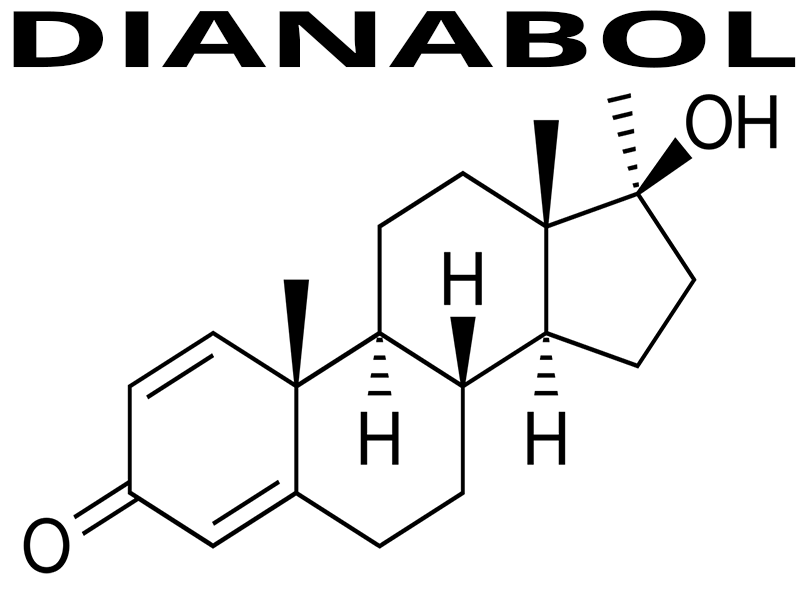

El Dianabol, conocido químicamente como metandrostenolona, es uno de los esteroides anabólicos androgénicos más conocidos y utilizados históricamente dentro del ámbito del culturismo y el rendimiento físico. Fue desarrollado en la segunda mitad del siglo XX con el objetivo de potenciar el rendimiento atlético y mejorar la capacidad de recuperación muscular.
Se trata de un compuesto sintético derivado estructuralmente de la testosterona, modificado químicamente para aumentar sus efectos anabólicos y permitir su administración oral. Esta característica lo diferenció de muchos otros compuestos inyectables y contribuyó a su rápida popularización.
A nivel farmacológico, el Dianabol actúa como un potente agente anabólico, favoreciendo el aumento de masa muscular, fuerza y recuperación. Su capacidad para acelerar la síntesis proteica y mejorar la retención de nitrógeno lo convirtió en una herramienta muy utilizada en etapas de volumen y ganancia de masa.
Una de sus características principales es la rapidez con la que sus efectos pueden hacerse notorios. En comparación con otros compuestos, el Dianabol suele generar aumentos rápidos de peso corporal y mejoras visibles en rendimiento en períodos relativamente cortos.
Sin embargo, parte de ese aumento inicial de peso suele estar relacionado con retención de líquidos, debido a su capacidad de aromatizar y aumentar niveles de estrógeno en el organismo. Esto puede influir tanto en la apariencia física como en la aparición de ciertos efectos secundarios.
Históricamente, el Dianabol tuvo un papel importante en la evolución del culturismo moderno y fue una de las sustancias más asociadas al crecimiento del uso de esteroides anabólicos en deportes de fuerza y estética.
A pesar de su popularidad y eficacia para aumentar masa muscular y fuerza, su perfil de efectos secundarios y su impacto sobre el sistema hormonal hacen que su uso implique riesgos importantes, especialmente cuando se utiliza fuera de contextos médicos o sin supervisión profesional.
Comprender qué es el Dianabol, cómo fue desarrollado y cuál es su función dentro del mundo de los esteroides anabólicos es fundamental para analizar correctamente sus mecanismos de acción, beneficios potenciales y riesgos asociados.
Nombre químico: Metandrostenolona (Methandrostenolone)
Nombre comercial: Dianabol
Tipo: Esteroide anabólico androgénico
Familia: Derivado de la testosterona
Origen: Compuesto sintético
Fórmula molecular: C20H28O2
Derivado de: Testosterona
Vía de administración: Oral
Uso clínico original: Tratamiento de pérdida muscular y recuperación física
Estado legal: Medicamento de prescripción médica o regulado según el país
Clasificación deportiva: Sustancia prohibida en competición
Aromatización: Sí
Actividad progestagénica: No significativa
Conversión a DHT: Baja
Hepatotoxicidad: Sí
Retención hídrica: Alta
Supresión hormonal: Alta
Impacto cardiovascular: Alto
Impacto hepático: Alto
Potencia anabólica: Alta
Potencia androgénica: Moderada

El Dianabol es uno de los esteroides anabólicos más conocidos por su capacidad para generar aumentos rápidos de masa muscular y fuerza. Su popularidad histórica dentro del culturismo se debe a sus efectos rápidos, aunque también presenta un perfil importante de efectos secundarios hormonales, cardiovasculares y hepáticos.
El Dianabol actúa uniéndose a los receptores androgénicos en distintos tejidos del cuerpo, especialmente en el tejido muscular. Esta unión activa mecanismos celulares que modifican la expresión genética y aumentan procesos relacionados con crecimiento, recuperación y adaptación muscular.
Su principal función dentro del organismo es potenciar el entorno anabólico, facilitando la construcción de tejido muscular y mejorando la respuesta del cuerpo frente al entrenamiento de fuerza.
Uno de los efectos más importantes del Dianabol es el aumento de la síntesis proteica. Esto permite que el cuerpo utilice aminoácidos de manera más eficiente para reparar fibras musculares dañadas y construir nuevo tejido muscular.
También incrementa la retención de nitrógeno dentro del músculo, un factor clave para mantener un entorno favorable para la hipertrofia. Un balance positivo de nitrógeno facilita la recuperación y el crecimiento muscular sostenido.
Además, puede mejorar la recuperación entre sesiones de entrenamiento, permitiendo tolerar mayores niveles de volumen e intensidad.
Esto explica por qué suele asociarse con aumentos rápidos de fuerza y masa muscular durante períodos relativamente cortos.
Como derivado de la testosterona, el Dianabol también presenta actividad androgénica. Esto significa que además de sus efectos anabólicos, puede influir sobre tejidos sensibles a andrógenos.
Entre estos efectos pueden encontrarse aumento de producción de sebo, aparición de acné y aceleración de caída del cabello en personas genéticamente predispuestas.
La intensidad de estos efectos depende de factores individuales como genética, sensibilidad hormonal y dosis utilizadas.
Una característica importante del Dianabol es su capacidad de aromatizar, es decir, convertirse parcialmente en estrógeno mediante acción enzimática.
Esto puede favorecer retención de líquidos, aumento de peso corporal y cambios en la apariencia muscular, haciendo que el físico se vea más voluminoso pero menos definido.
También puede aumentar el riesgo de efectos secundarios relacionados con estrógeno, como sensibilidad mamaria o ginecomastia.
El Dianabol es especialmente conocido por su capacidad para mejorar la fuerza de forma rápida. Esto se relaciona tanto con mejoras en síntesis proteica como con mayor retención de agua intracelular y aumento del almacenamiento de glucógeno muscular.
Este aumento de fuerza suele traducirse en mejor rendimiento en entrenamiento y mayor capacidad de progresión de cargas.
A diferencia de muchos esteroides inyectables, el Dianabol es un compuesto oral. Para sobrevivir al metabolismo hepático inicial, fue modificado químicamente para resistir su degradación al pasar por el hígado.
Esta modificación permite su efectividad por vía oral, pero también incrementa el estrés hepático en comparación con otros compuestos no orales.
Comprender el mecanismo de acción del Dianabol permite entender por qué es tan efectivo para generar ganancias rápidas de masa muscular y fuerza, pero también por qué su perfil de efectos secundarios requiere atención y análisis cuidadoso.
Aunque el Dianabol es conocido por su capacidad para generar aumentos rápidos de masa muscular y fuerza, también presenta un perfil de efectos secundarios importante debido a su impacto hormonal, metabólico y hepático. Su uso puede alterar múltiples sistemas del organismo, especialmente cuando se utiliza en dosis elevadas o durante períodos prolongados.
Comprender estos riesgos es fundamental para entender que sus resultados físicos no están separados de sus consecuencias biológicas.
El uso de Dianabol puede suprimir la producción natural de testosterona. Cuando el cuerpo detecta andrógenos externos, reduce su propia producción hormonal como mecanismo de regulación.
Esta supresión puede afectar libido, fertilidad, recuperación hormonal y equilibrio endocrino general.
La intensidad de esta supresión depende de factores como dosis, duración del uso y respuesta individual.
Debido a su capacidad de aromatizar, el Dianabol puede aumentar niveles de estrógeno. Esto puede favorecer retención hídrica significativa y cambios en la apariencia física.
También puede aumentar el riesgo de ginecomastia y sensibilidad mamaria en personas predispuestas o expuestas a niveles elevados de estrógeno.
Al tratarse de un compuesto oral modificado para resistir el metabolismo inicial del hígado, el Dianabol puede generar una carga importante sobre este órgano.
El uso prolongado o en dosis altas puede alterar marcadores hepáticos y aumentar el riesgo de daño funcional.
Este es uno de los riesgos más importantes asociados a esteroides orales.
El Dianabol puede alterar negativamente el perfil lipídico, reduciendo colesterol HDL y aumentando LDL, lo que puede incrementar riesgo cardiovascular con el tiempo.
Además, la retención de líquidos puede influir sobre la presión arterial y aumentar carga sobre el sistema circulatorio.
Debido a su actividad androgénica, pueden aparecer efectos como acné, piel grasa y aceleración de caída del cabello en personas con predisposición genética.
Estos efectos dependen en gran medida de la sensibilidad individual a andrógenos.
Algunas personas pueden experimentar cambios de humor, irritabilidad o alteraciones emocionales durante su uso, especialmente cuando existen fluctuaciones hormonales marcadas.
La respuesta psicológica varía entre individuos y puede verse influida por factores personales y ambientales.
Parte de las ganancias rápidas de peso asociadas al Dianabol pueden deberse a retención de agua y glucógeno, lo que significa que no todo el aumento corporal representa tejido muscular nuevo.
Tras la suspensión, parte de ese peso puede perderse, especialmente si no existe una base sólida de entrenamiento, nutrición y recuperación.
Comprender estos efectos secundarios es esencial para evaluar correctamente la relación entre resultados rápidos y costo fisiológico. El Dianabol puede ofrecer cambios visibles en poco tiempo, pero esos cambios pueden venir acompañados de riesgos significativos para la salud.
El Dianabol fue desarrollado originalmente con fines médicos y de mejora del rendimiento físico, convirtiéndose en uno de los primeros esteroides anabólicos orales ampliamente conocidos. Con el tiempo, su uso se extendió desde contextos clínicos hacia ámbitos deportivos y de culturismo, donde ganó popularidad por su capacidad para generar aumentos rápidos de masa muscular y fuerza.
Comprender la diferencia entre uso clínico y uso recreativo es importante para entender cómo cambia la relación riesgo-beneficio según el objetivo y el contexto de utilización.
En contextos médicos, la metandrostenolona fue utilizada en ciertas situaciones donde se buscaba mejorar el balance proteico, favorecer recuperación corporal o apoyar procesos de recuperación física.
Su capacidad para mejorar retención de nitrógeno y síntesis proteica le daba utilidad en escenarios específicos donde existía pérdida de masa corporal o necesidad de soporte anabólico.
Sin embargo, con el paso del tiempo y el avance de otros tratamientos, su uso clínico fue disminuyendo debido a su perfil de efectos secundarios y al desarrollo de alternativas más controlables.
En el ámbito del fitness y culturismo, el Dianabol se utiliza principalmente por su capacidad para aumentar fuerza y peso corporal rápidamente, especialmente en etapas orientadas al volumen muscular.
Su rapidez de acción y facilidad de administración oral hicieron que se volviera especialmente popular entre personas que buscan resultados visibles en períodos cortos.
En este contexto, el objetivo principal no es tratar una condición médica, sino maximizar rendimiento, masa muscular o estética.
En el uso clínico, el objetivo suele ser restaurar o mejorar una condición de salud específica bajo supervisión profesional, ajustando dosis y monitoreando efectos secundarios.
En el uso recreativo, el objetivo generalmente está centrado en rendimiento físico, fuerza o apariencia corporal, lo que puede llevar a exposiciones más agresivas y mayores riesgos.
Una diferencia importante entre ambos contextos es la magnitud de exposición. En medicina, cuando una sustancia anabólica es utilizada, suele hacerse buscando un efecto controlado y proporcional.
En ámbitos recreativos, muchas veces se utilizan cantidades superiores a niveles fisiológicos normales con la intención de maximizar resultados, lo que aumenta considerablemente la probabilidad de efectos secundarios.
El acompañamiento médico permite evaluar parámetros hormonales, hepáticos y cardiovasculares, algo fundamental cuando se trabaja con sustancias que alteran múltiples sistemas del cuerpo.
La diferencia entre usar una sustancia en un contexto terapéutico y utilizarla con fines recreativos no está solo en el objetivo, sino también en el nivel de control, supervisión y manejo de riesgos.
Entender esta diferencia permite analizar al Dianabol de forma más completa: no solo como una herramienta de mejora física, sino como una sustancia cuyo impacto depende profundamente del contexto en el que se utiliza.
Aunque el Dianabol es conocido por su capacidad para generar aumentos rápidos de masa muscular y fuerza, existen alternativas más sostenibles y con menor impacto negativo sobre la salud para mejorar el rendimiento físico y la composición corporal. El desarrollo muscular no depende exclusivamente de sustancias anabólicas, sino de la combinación adecuada de entrenamiento, nutrición, recuperación y constancia.
Si bien los resultados obtenidos de forma natural suelen requerir más tiempo, también suelen ser más estables, sostenibles y con menor costo fisiológico a largo plazo.
La base del desarrollo muscular sigue siendo un entrenamiento bien planificado. Variables como progresión de cargas, volumen adecuado, intensidad y selección inteligente de ejercicios son fundamentales para generar hipertrofia y ganancias de fuerza.
Optimizar estas variables puede producir mejoras importantes sin necesidad de recurrir a compuestos hormonales.
Una alimentación adecuada es esencial para construir masa muscular. Mantener suficiente ingesta calórica, proteínas de calidad, carbohidratos suficientes para rendir y grasas saludables para sostener funciones hormonales permite crear un entorno favorable para el crecimiento.
Una nutrición bien estructurada también mejora recuperación, rendimiento y salud general.
El crecimiento muscular ocurre en gran parte fuera del gimnasio, durante la recuperación. Dormir adecuadamente y permitir suficiente descanso entre entrenamientos es fundamental para reparar tejido muscular y optimizar adaptaciones.
El sueño también influye directamente sobre la producción hormonal natural y el rendimiento físico.
Una de las principales ventajas del progreso natural es su sostenibilidad. Los resultados construidos mediante hábitos sólidos suelen mantenerse mejor y generar una base física más estable.
La constancia en entrenamiento, alimentación y recuperación puede producir cambios físicos muy significativos con el tiempo.
En lugar de recurrir a compuestos hormonales, algunas personas pueden beneficiarse de suplementos con mejor perfil de seguridad, como proteínas en polvo, creatina o cafeína, siempre dentro de un contexto nutricional adecuado.
Estas herramientas no reemplazan la disciplina ni generan resultados extremos, pero pueden apoyar rendimiento y recuperación.
La búsqueda de resultados rápidos puede ser atractiva, especialmente en etapas iniciales de entrenamiento o cuando existe presión estética. Sin embargo, acelerar procesos mediante sustancias potentes puede traer consecuencias hormonales, hepáticas y cardiovasculares importantes.
Construir masa muscular de forma gradual y consistente suele ser una estrategia más segura y sostenible.
El Dianabol puede ofrecer resultados rápidos, pero esos resultados tienen un costo fisiológico que no debe subestimarse. Antes de considerar su uso, es importante entender que la mayoría de las mejoras físicas pueden lograrse mediante una buena planificación de entrenamiento, nutrición y recuperación.
Priorizar estrategias sostenibles y hábitos sólidos permite desarrollar un físico fuerte y funcional reduciendo riesgos innecesarios y favoreciendo la salud a largo plazo.